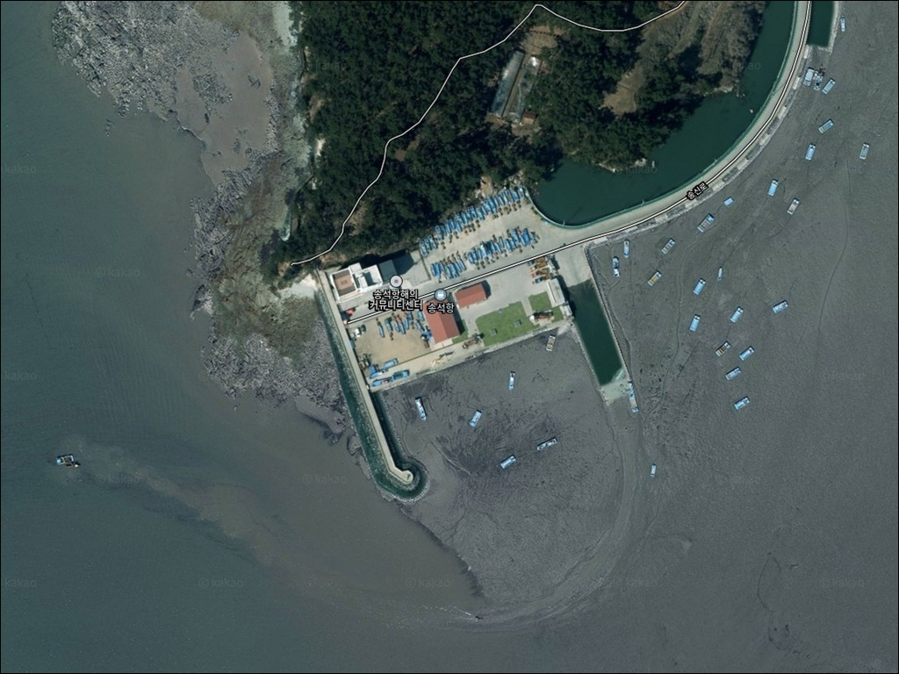
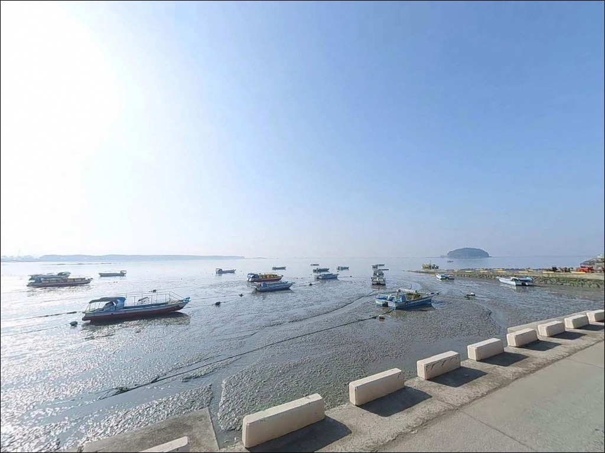
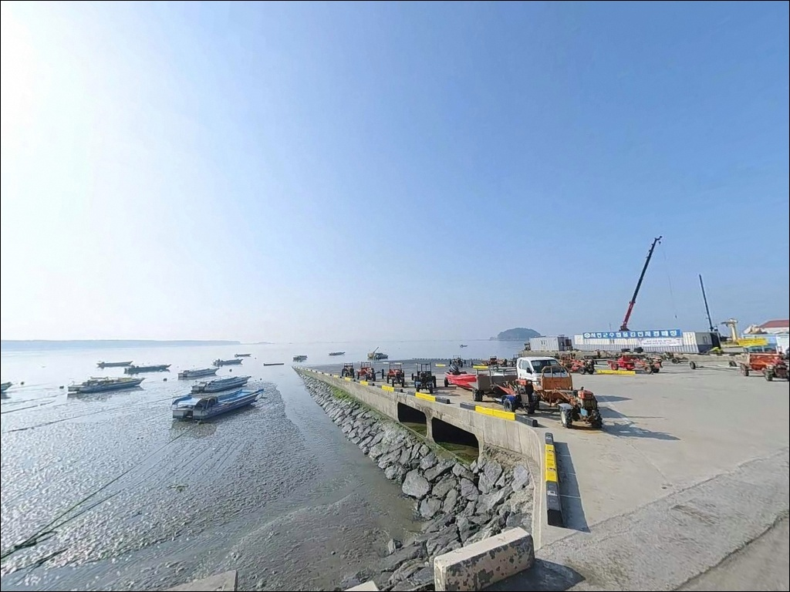
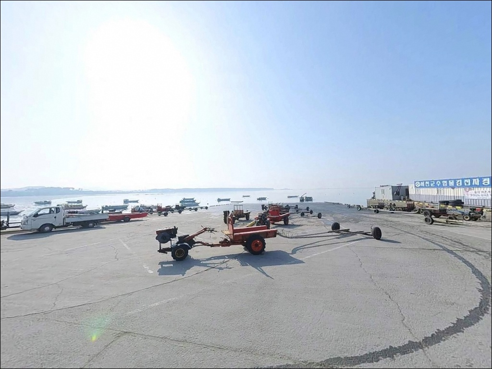
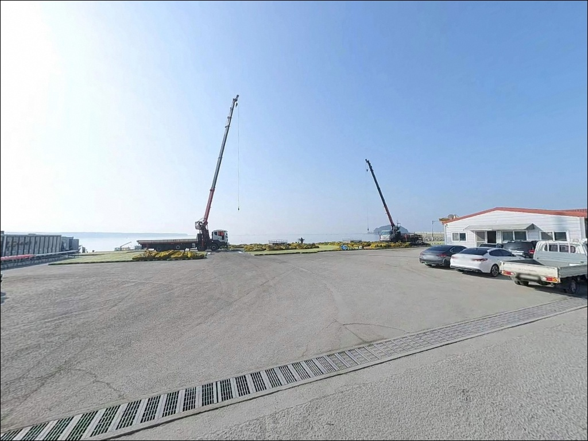
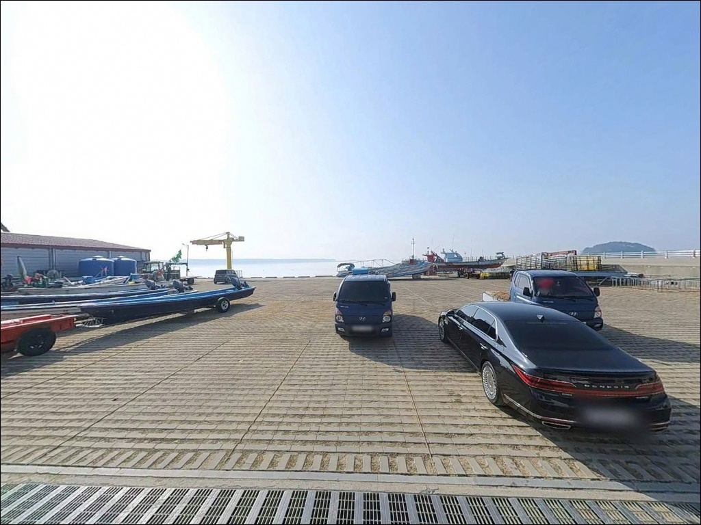
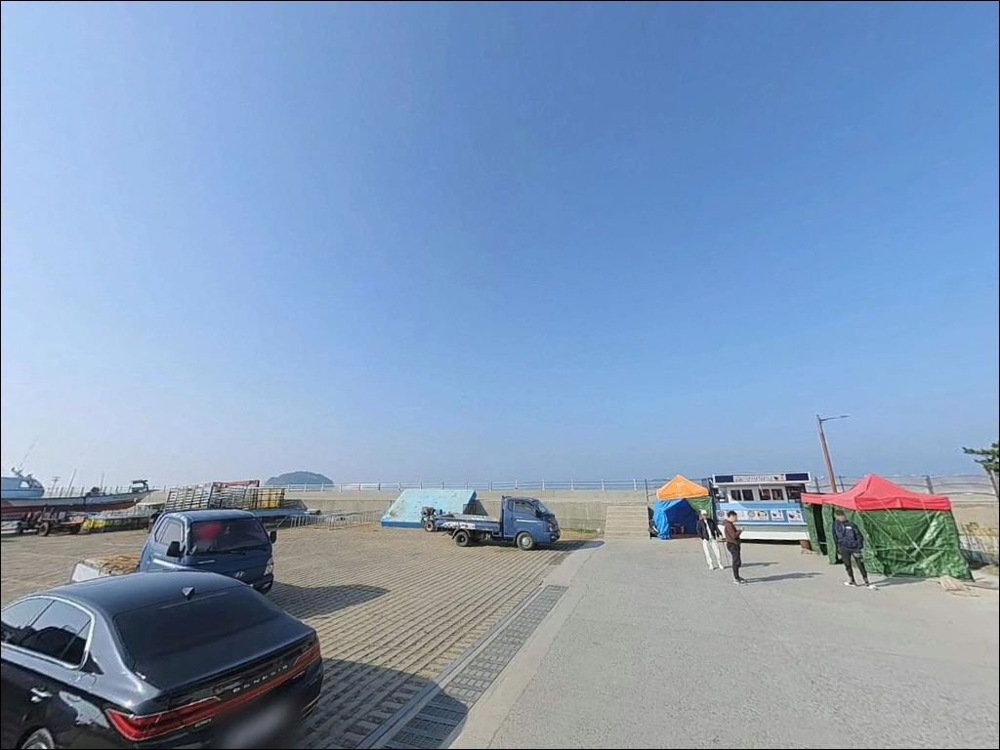
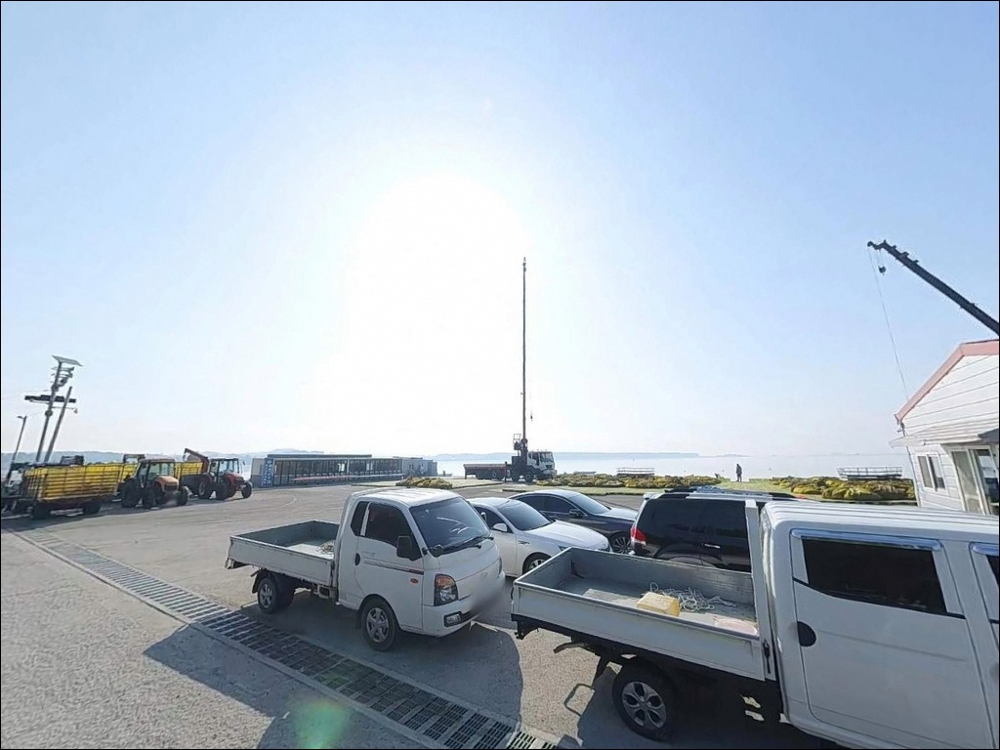
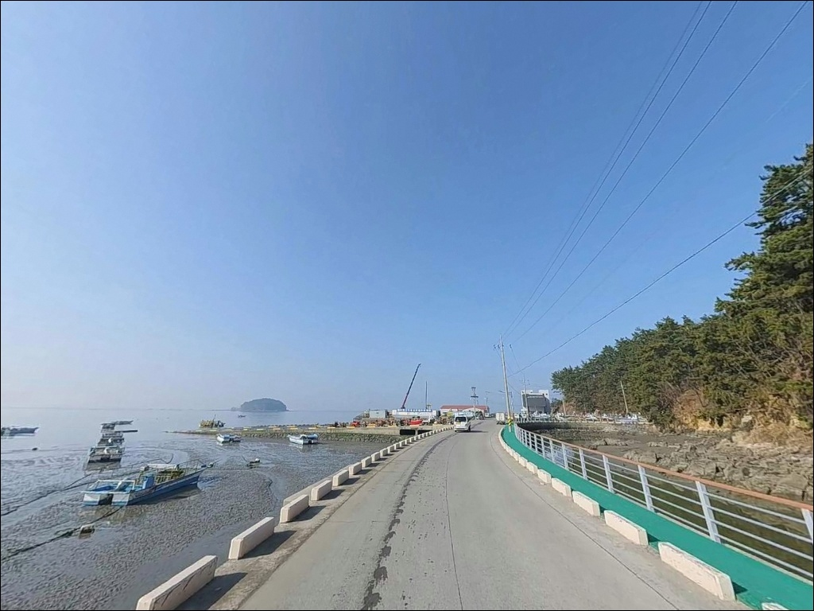

송석항, 충남 서천군 고요함이 매력인 차박, 낚시 감성 장소
이 페이지에는 광고(제휴 링크 포함)가 있으며, 광고 링크를 통해 구매하면 운영자가 판매 수익 또는 수수료를 받을 수 있습니다. 포인트 사진: 카카오맵 스카이뷰·로드뷰. 이 페이지의 지도·사진 이미지는 카카오맵의 실제 서비스 이미지와 다를 수 있습니다.


송석항
충남 서천군 마서면 송석리 671
물때 확인 없이 송석항을 찾으면
간조 시 외항 수심이 크게 빠져
원하는 자리에서 낚시 자체가
성립하지 않습니다.
서해 특성상 조수 간만의 차가 크고,
타이밍을 맞추지 않으면
장거리 이동 후 포인트 앞에서
발만 구르는 결과가 됩니다.
1978년 지방어항으로 지정된 송석항은
충남 서천군 마서면 해안에 자리한
소형 어항입니다.
규모는 크지 않지만
방파제와 물양장이 함께 갖춰진 구조로,
서천 해안권 생활낚시 포인트로
꾸준히 찾는 사람들이 있는 곳입니다.
이 글은 송석항의 진입 동선,
물때 기반 낚시 여건,
차박 체류 조건에 집중합니다.
조황 단정이나 어종 보장은
이 글의 범위에 포함되지 않습니다.

1. 진입 동선과 주차 여건
송석항까지 이어지는 진입도로 298m는
공식 어항 개발계획에 포함된 도로입니다.
마서면 해안도로를 따라 항구까지
포장도로로 접근이 가능하며,
일반 승용차와 소형 SUV 기준으로
진입에 큰 어려움은 없는 편입니다.
어촌뉴딜300 사업 대상지로 지정된 이후
기반 시설이 일부 정비된 상태입니다.
다만 어촌 마을을 통과하는 구간이 있어
도로 폭이 좁아지는 지점이 존재합니다.
대형 차량이라면 출발 전에
진입로 폭과 회차 가능 여부를
미리 확인하는 것이 안전하며,
물양장 끝단과 방파제 기부 쪽에
소형 차량 기준 회차가 가능한
공간이 갖춰진 구조입니다.
주차는 어촌체험마을 해의 커뮤니티센터
인근 공터와 방파제 초입 확장 구간을
활용하는 방식이 일반적입니다.
어민 작업 공간과 선박 정박 구역을 피해
자리를 잡는 것이 기본 매너이며,
물양장 접안 구역에는
차량을 세우지 않는 것이 원칙입니다.

2. 차박 환경과 야간 체류 여건
송석항 일대는 소규모 어촌 마을 구조로
민가 밀집도가 낮은 편입니다.
야간에는 차량 통행이 거의 없어
조용한 분위기가 유지됩니다.
어촌체험마을 데크길 주변으로
기본적인 조명이 갖춰진 구간이 있으나,
방파제 끝단으로 갈수록 어두워지므로
헤드랜턴은 반드시 챙겨야 합니다.
외항 쪽은 서해에 직접 노출된 구조로,
북서풍이 강한 날에는 체감 풍속이
상당히 높아질 수 있습니다.
낚시를 마치고 조용히 하룻밤 머무는 용도로는
나쁘지 않은 환경이지만,
기상 예보는 출발 전 단계에서
반드시 확인해야 합니다.
차박 자리는 어촌체험마을 주차 공터 또는
방파제 진입 초입 확장 구간이
현실적인 선택지입니다.
어민 조업 동선을 막지 않는 위치가
기본 조건이며,
외항 방향은 파도와 바람 영향을
직접 받는 구조인 만큼
체류 자리 선택 시 방향을 고려해야 합니다.


3. 주변 편의시설과 인프라 현황
송석항 반경 3km 이내에는
편의점이 없습니다.
식수, 음료, 낚시 소품 등
모든 소모품은 출발 전에 완비해야 하며,
완전 자급 체제로 진입하는 것이
이 포인트의 기본 준비 방식입니다.
반경 10km권으로 이동하면
장항 방면의 장항전통시장과
생활 상권을 이용할 수 있습니다.
낚시 소품이나 식료품이 필요하다면
이 동선을 출발 전 단계에서
미리 활용하는 편이 효율적입니다.
어촌체험마을 커뮤니티센터가
항 인근에 위치해 있으며,
체험 프로그램 운영 시간에는
시설 이용이 가능한 구조입니다.
단, 시설 운영 여부는 방문 전
서천군 또는 체험마을에 직접 확인하는 것이
정확한 방법입니다.

4. 물때가 결정하는 낚시 가능 시간대
서해안 조간대형 포인트에서
물때는 낚시 가능 여부 자체를 결정합니다.
송석항 일대는 조수 간만의 차가 큰 지역으로,
간조 전후에는 외항 갯벌이 드러나
채비가 바닥에 걸리는 상황이 발생합니다.
들물이 차오르기 시작하는
만조 2~3시간 전부터가
실질적인 낚시 시작 타이밍입니다.
바다타임에서 서천 마서면 기준
물때를 미리 확인하고
출발 시각을 맞추는 것이
이 포인트를 공략하는 기본 전략입니다.
사리 전후에는 조류가 강해져
채비 컨트롤이 어려워지는 경우도 있으므로,
조금 전후 또는 들물 초반 타이밍을
우선 기준으로 삼는 편이 안정적입니다.
기상 변화에도 주의가 필요합니다.
북서풍이 강한 날은 외항 방향 낚시 자리에서
체감 조건이 크게 달라지므로,
출발 당일 아침 기상 재확인을
반드시 거쳐야 합니다.
테트라포드 구간이 있다면
야간에 미끄럼 방지에 특히 주의해야 합니다.
서해안 소형 어항에서는
들물 전후 2~3시간이
낚시 조건이 가장 살아나는 타이밍입니다.

5. 지형 기반 낚시 여건 분석
송석항의 핵심 구조는
151m 방파제와 155m 물양장입니다.
물양장은 발판이 넓고 평탄한 구조로
접근이 수월한 편입니다.
방파제 끝단 외항 쪽은 수심이
빠르게 깊어지는 구간이며,
원투낚시와 루어낚시 모두
운용이 가능한 여건입니다.
방파제 주변 수심은 끝단 기준으로
8~12m 수준으로 깊은 편이며,
외항 방향에서 조류가
비교적 원활하게 흐르는 구조입니다.
슴갈목섬, 아목섬을 포함한
어항구역 주변 수로 구간에서
조류 흐름이 집중되는 지점이
형성되는 구조입니다.
내항은 수면이 잔잔한 편으로
찌낚시와 원투 단거리 투척이 가능하고,
외항은 조류가 더 활발하게 흘러
루어 운용에 유리한 조건입니다.
바닥은 서해안 조간대 특성상
간조 시 갯벌이 드러나는 구간이 있어,
입장 전 물때 확인이 선행되어야 합니다.
출조 전 최신 조황은
"송석항 낚시" 또는 "서천 방파제 조황"으로
검색해 보시기 바랍니다.


6. 포인트에 어울리는 낚시 스타일
이 포인트에서 가장 잘 맞는 낚시는
원투낚시입니다.
물양장과 방파제 끝단에서
멀리 채비를 보내면
망둑어, 붕장어, 노래미 계열 어종을
기대해볼 수 있는 지형 조건입니다.
들물이 차오르는 타이밍에
채비를 원거리로 보내는 방식이
이 포인트에 잘 맞습니다.
루어낚시도 노려볼 만한 방식입니다.
방파제 끝단 외항 쪽에서
조류가 흐르는 시간대를 노리면
농어 루어 시도가 가능한 조건이며,
가을철 서해안 특성에 맞춰
워킹 광어 루어도
방파제 외항 측면을 따라
천천히 탐색하는 방식이 어울립니다.
찌낚시는 내항 쪽 잔잔한 수면 구간에서
시도해볼 수 있습니다.
들물이 충분히 차오른 뒤
내항 입구 방면을 공략하는 방식이 안정적이며,
우럭, 볼락 계열 어종이
이 지형에서 기대해볼 수 있는 어종입니다.
수심이 조류 타이밍에 따라 달라지므로
찌 깊이 조정을 수시로 확인해야 합니다.

7. 대안 포인트와 플랜B 동선
송석항 현장 여건이 여의치 않거나
물때가 맞지 않을 때
서천 방면 첫 번째 대안은
마량항 방파제입니다.
서천군 서면 마량리에 위치하며
외항 갯바위 낚시가 가능한 구조로,
24시간 접근이 가능한 방파제입니다.
광어, 노래미, 우럭 계열이
이 권역에서 기대해볼 수 있는 어종입니다.
규모가 큰 대안이 필요하다면
홍원항 방파제가 있습니다.
서방파제 약 500m, 동방파제 약 300m 규모로
서천권 대표 방파제 낚시 포인트이며,
진입과 주차 여건이 안정적입니다.
날씨나 포인트 여건에 문제가 생겼을 때
가장 먼저 이동할 플랜B로
삼기 적합한 규모입니다.
차박 대안 동선으로는
장항 송림해변이 고려할 만합니다.
캠핑 분위기가 갖춰진 해변으로
서천권 낚시와 연계한 1박 동선 구성에
활용하는 곳입니다.
선도리갯벌체험마을도 가족 동반 출조 시
갯벌체험과 낚시를 함께 묶는
대안으로 둘 수 있습니다.

원투낚시 즐기는 분이라면
잘 맞는 서천 소형 방파제
원투낚시와 루어낚시를 즐기는 낚시인이라면
송석항의 지형 조건은 잘 맞는 구조입니다.
151m 방파제와 155m 물양장이 만들어내는
발판 넓은 접근 환경과
끝단 기준 8~12m의 비교적 깊은 수심은
생활낚시 스타일로 공략하기
나쁘지 않은 조건입니다.
반면 물때 계산 없이 방문하거나
편의시설을 기대하고 간다면
아쉬운 결과로 이어지는 포인트입니다.
물때 확인, 자급 준비, 진입로 사전 점검,
이 세 가지를 갖추고 간다면
조용한 서천 서해안 방파제에서
충분히 만족스러운 출조가 됩니다.
야간에 조용한 어항 분위기를 즐기며
낚시와 하룻밤 차박을 함께 소화하고 싶은 분이라면,
물때와 기상 조건만 갖추면
서천 마서면의 한적한 어항이
낚시와 차박 모두를 담을 수 있는
출조가 될 수 있는 곳입니다.